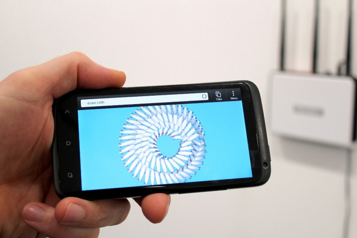
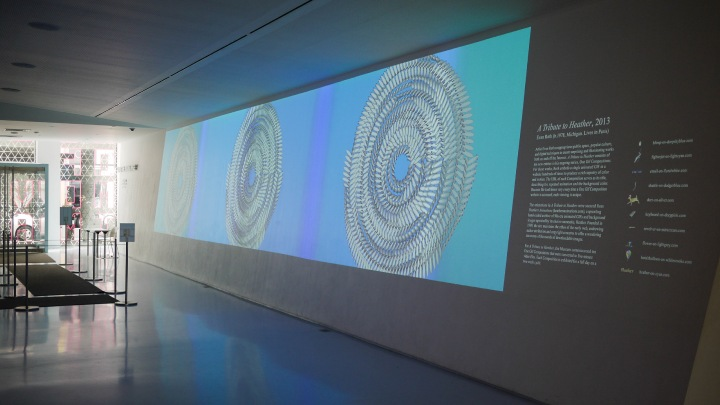
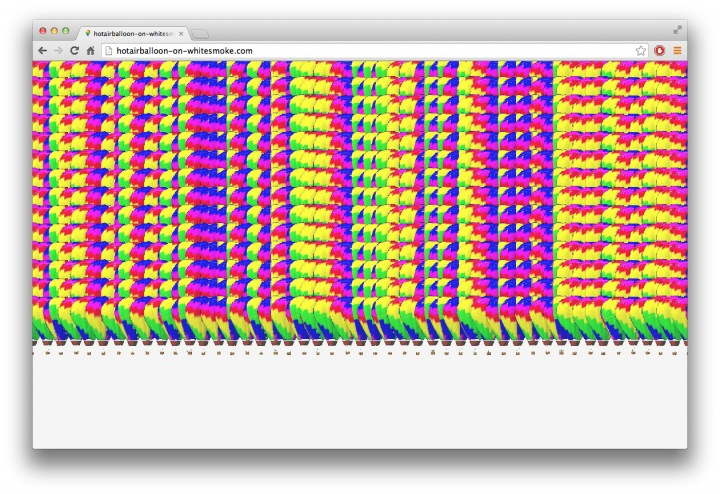

context aware
code + concept
One of the most exciting things about the Web as a platform is its broad reach and adaptability. We've already discussed how around half the planet has access to the Internet, and how practically all (user facing) devices connected to the Internet have some sort of Web browser installed by default. This means all anyone needs to do to interact with your art is click on a link to "visit" your work. For this reason, we tend to think of our audience as individuals interacting with our work on small personal screens like phones or laptops, but these screens can also be much larger and site-specific, say for example in the context of an art installation in a museum or gallery. However, for our piece to be intentionally created not only for small personal screens but also large public screens requires certain considerations.
In web design there's this concept of adaptive or responsive design, which refers to coding websites in such a way so that they look good on different screen sizes. Responsive web design aims to keep the overall look and content of a webpage consistent, while adjusting layout and details to fit different screen sizes and devices. But this isn't the only way the code driving our pieces can become contextually aware. Take the piece A Tribute To Heather (2013) by Evan Roth.

Evan's pieces (ten in the series) are generated from code, algorithmic compositions which take as part of their inputs/variables the screen's width and height, in this way they are "responsive" to the specific screen rendering the composition (the details of how this is done is explained in the 2D Algorithmic Compositions notes). This is important because Evan designed this piece not only to be viewed on small mobile devices and larger laptop screens, but also even more specifically for a large projection art installation at the Museum of Moving Image which commissioned the creation of the work.

While adapting to different screen sizes is the most common example of what it means for a piece of online generative art to be aware of it's contexts, it is by no means the only one. For example, this series appears slightly differently each time it is displayed because the gifs always load at slightly different speeds (more on that later) and so part of what is required for the audience to fully appreciate the piece is the act of refreshing the page. This is something we can easily do on our personally devices, but there is no "refresh" button in the museum where the piece was installed. For this reason, Evan included some extra logic in his algorithm which uses code placed in the browser's URL to render a museum-ready variation of the piece. The Web provides an API for updating and interacting with URLs (the web addresses) which includes what are called Search Parameters aka query strings, these allow us to define variables in the URL itself, which means we can change details of our composition simply by changing the variables in our URLs (more on that in the 2D Algorithmic Compositions notes). In Evan's case he has an optional URL parameter called sec which museum's can use to set a delay (a number in seconds) for when the piece should automatically click that refresh button. A simple solution to what otherwise may have required creating custom hardware or other interfaces for the museum context.

A Tribute to Heather consists of ten compositions created by embedding a single animated GIF in a website hundreds of times to produce a rich tapestry of color and motion. The URL of each composition serves as its title, describing the repeated animation and the background color. Because file load times vary every time a One Gif Composition website is accessed, each viewing is unique.
The animations in A Tribute to Heather were sourced from Heathers Animations, a sprawling hand-coded archive of 90s-era animated GIFs and background images operated by its elusive namesake, Heather. Founded in 1999, the site maintains the ethos of the early web, eschewing author attribution and copyright concerns to offer a wandering taxonomy of thousands of downloadable images."
Museum of Moving Image
While this piece is a great example of simple technical techniques which can be used to make our compositions more context aware, the subject matter of the work is also a great example of a conceptually context aware piece. As the didactic text from the Museum of Moving Image (quoted above) makes clear, Evan's piece is also very much about what it means to create content online in more ways than one. First, as other works we've looked at this quarter, the URL is not just a technical tool (a way to access the site and change it's parameters as explained above) but also the title of the work. The titles of each piece in the series also follow their own sort of "algorithm" which is: [name of gif]-on-[name of background color].com, in this way the title follows a classic art convention of calling it out the materials often seen in museum didactic text (ex: oil on canvas) except here done to call attention to the medium of the web in a couple of ways. First, the background colors are all based on colors which have official HTML color names (rather than colors which require specific color codes), reminding us that the "web" is our medium (not paper or canvas).
Secondly, the the name of the gif before the word "-on-" implies that the gif is like pigment on a canvas, they are one of the most fundamental compositional assets native to the medium of the Web since it's inception. The "ethos" of the early web mentioned in the Museum's description of the piece refers to the "digital folklore" we discussed in Internet Art and Web Design. For folks who did not take that course make sure to watch the video above for more context. More specifically, Evan's piece is a tribute to one specific site in the early days of the Web, run by it's namesake "Heather" which functioned as a repository of early/popular animated gifs from the time. Unforntuatley heatheranimations.com no longer exists but you can visit an archived version of it on the Internet Archive.
Lastly, while the majority of the composition is dictated by the algorithmic logic in Evan's code, part of the final aesthetic details of the piece are determined by the nature of the Internet itself. As we discussed earlier this quarter, everytime we visit a website the code (and all it's assets, like images) are sent over the Internet, from the computer hosting the site to the computer viewing it. This takes time, and when you load multiple images (as in Evan's piece) each arrives at a slightly different time than the next, and because these are gifs it means they all start animating at a slightly different time. The fact that they're not all looping in sync is meant to function as a reminder of the medium we're on and how it works. Each time we refresh, we get a different variation on the piece as a result (hence the importance of URL parameter mentioned earlier for the installation version). Having said that, the protocols underlying the Web have evolved since 2013, HTTP and browsers can actually load things much more effeiciently today. For example, if you're loading the same image file multiple times, the browser only ever requests that file once and then renders them all simultaneously, which means the delayed animation effect Evan had originally been aesthetically exploiting for the piece no longer works (but we can simulate that effect as explained in the 2D Algorithmic Compositions notes)
A Tribute to Heather (a case study)
For our meditation this week we'll create our own "Tribute to Heather" by selecting a gif and a background color and creating a algorithmic composition using the concepts covered thus far. Consider using a gif from the heathersanimations.com (archived here) as well as an HTML color that has a name. Refer to the 2D Algorithmic Composition notes for step by step examples. Make sure that you "publish" your project on the web and submit your published URL to canvas.